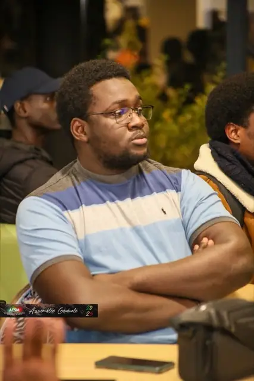
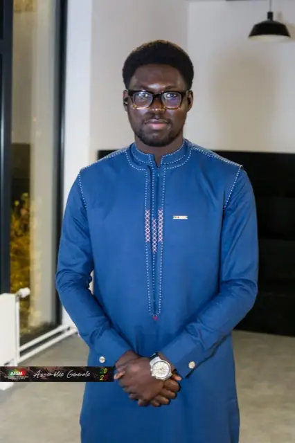
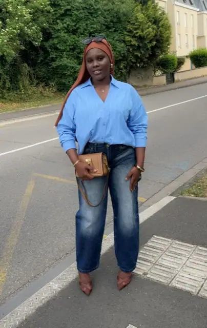

Commission pédagogique
Suivi administratif et universitaire des étudiants, en lien avec la commission sociale.
Un bureau élu chaque année en assemblée générale, épaulé par des commissions où s’impliquent une trentaine de bénévoles.
En exercice depuis le 2 novembre 2025

Oumar Ka Thiam
Président
Fousseyni Touré
Vice-président
Babacar Dramé
Secrétaire général
Mariama Siby
TrésorièreComment se répartit le travail
Le bureau ne fait pas tout seul. Chaque commission prend en charge un pan de la vie de l’association, avec un responsable qui coordonne et des membres qui s’impliquent au gré de leur temps disponible.
Suivi administratif et universitaire des étudiants, en lien avec la commission sociale.
Mise en relation avec des professionnels, échanges sur les métiers et accompagnement des étudiants vers le monde professionnel.
Colis alimentaires, attestations d’hébergement, cagnottes solidaires et accompagnement des étudiants en difficulté.
Premier contact avec les nouveaux arrivants, mise en relation, visites en résidences.
Soirées culturelles, défilés, théâtre, tournois et rencontres sportives.
Logistique des événements, du dîner d’accueil à la journée d’intégration.
Relations avec les structures et entreprises partenaires, recherche de financements.
Lien avec l’Université de Lorraine, les institutions et les autres associations étudiantes.
Vérification des comptes présentés en assemblée générale, indépendamment du bureau.
Réseaux sociaux, création de contenu et couverture des événements de l’association.
Mémoire de l’association
L’AESM d’aujourd’hui doit beaucoup aux deux bureaux qui ont fait le travail le plus difficile : relancer une association à l’arrêt, puis la faire tenir une année entière.

Mamadou Seye
Président 2024-2025Aujourd’hui représentant du président de la FESSEF pour le Grand Est.
Khadim Diallo
Président 2023-2024À l’origine de la relance de l’association le 23 août 2023, après près de trois ans d’arrêt.
Le bureau élu le 31 octobre 2024, présidé par Mamadou Seye, organisé par commission.
Mamadou Seye
Khoudia Sow Tall Dioum
Atta Gueye (trésorière), Adja Tabara Sarr (adjointe)
Adama Mbengue (secrétaire), Amy Ndiaye (adjointe)
Ababacar Ndiaye (responsable), Hélène Monique Ndiolène
Mansour Fall (responsable), Mamadou Castro Diouf
Oumar Ka Thiam, Dame Diop
Ahmed Tambedou (responsable), Babacar Faye, Malick Dione
Babacar Ly (responsable), Assane Bane, Abdou Sakho
Sokhna Ndiaye (responsable), Nogaye Fall Touré, Natou Gaye, Mame Diarra Ndiaye, Mame Cheikh Fall, Samba Diallo
Malick Seye (responsable), Aïssatou Gueye Sarr
El Hadji Malick Sonko, Mariame Sibi
Khadidiatou Korka Mbow
Mamadou Traoré (responsable), Satan Ndiaye, Ababacar Ngome, Mouhamed Sylla, Mamadou Thiam dit Djiby (créateurs de contenu)
Élu à l’assemblée générale du 23 août 2023, présidé par Khadim Diallo.
Khadim Diallo
Seynabou Sène
Fatou Seye (secrétaire générale), El Hadji Malick Seye (adjoint)
Fatou Ndiolé Sène (trésorière), Daouda Diop (adjoint)
Malick Sarr, Babacar Faye
Mamadou Castro Diouf, Mamadou Traoré
Bineta Dia
Rejoindre une commission
Les commissions sont ouvertes à tous les membres, sans engagement à l’année. Un après-midi, un événement, une compétence à partager : ça suffit pour commencer.